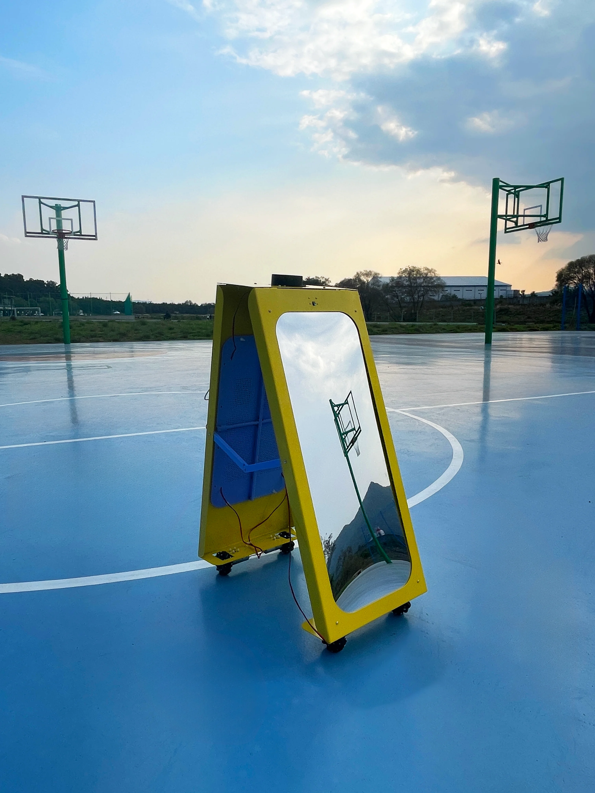
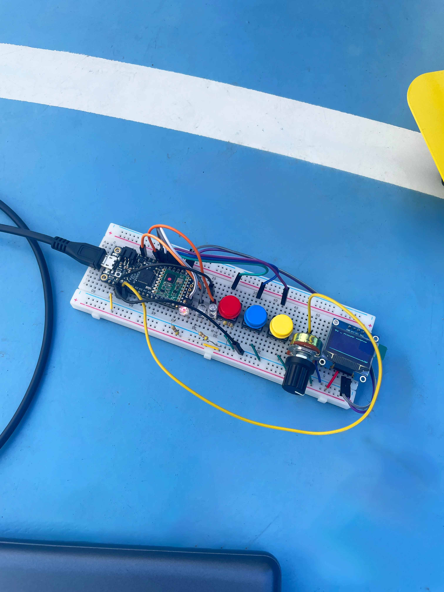
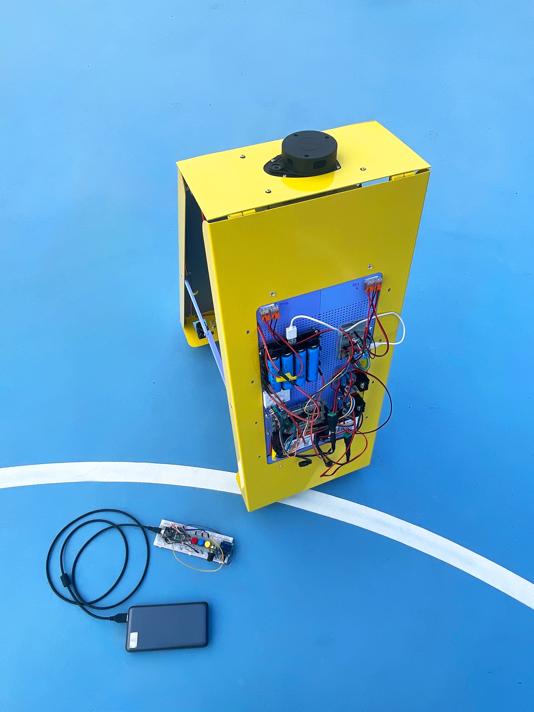
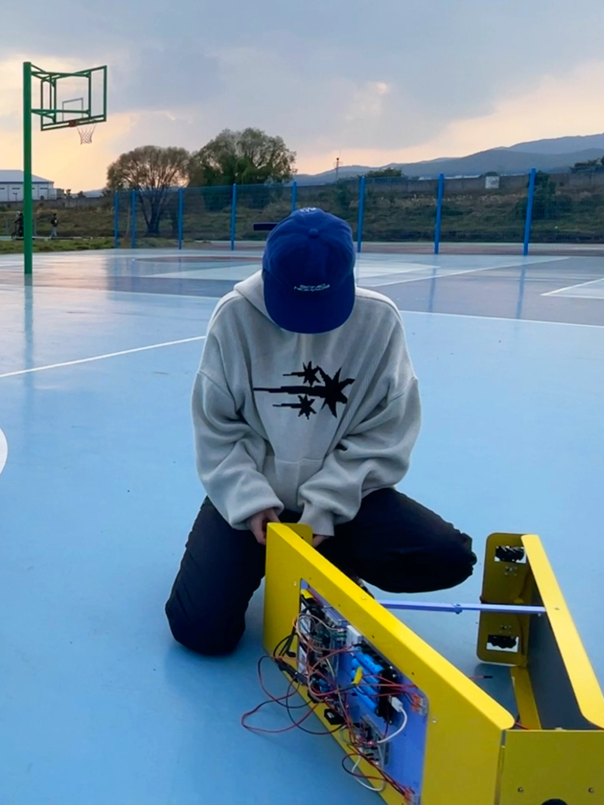
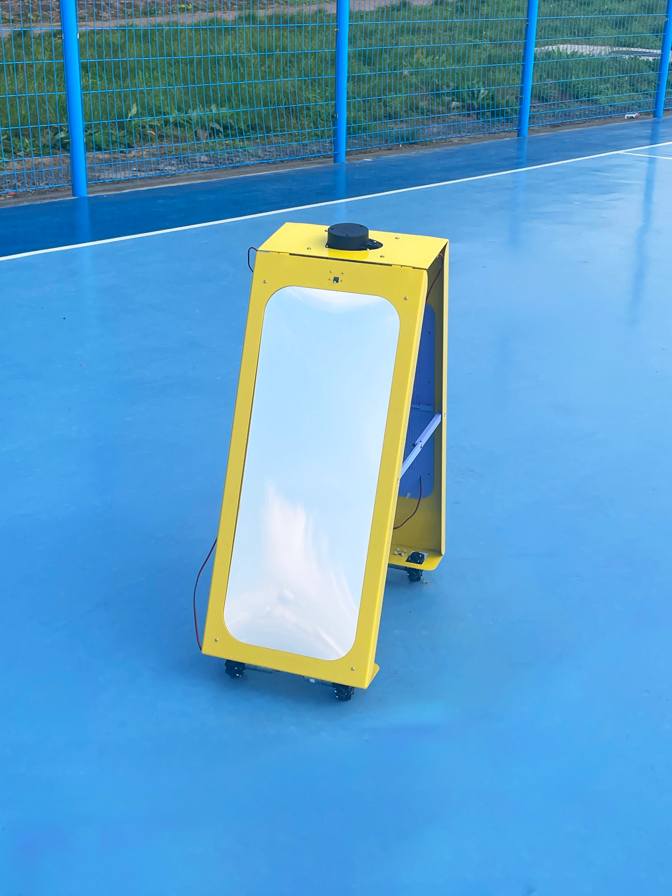

/>





/>
걷는 무생물을 제작하면서 '걷기'가 수행되기 위한 사전 행위들을 역산해 봅니다.
'걷는 거울', '걸어다니는 빈백' 등 이전 기획한 작업들을 구현하기 위한
매커니즘을 리서치하고, 그 중 걷는 거울 프로토타입을 제작했습니다. 2024년
진행된 키네틱 리서치 프로젝트의 후속 작업으로 '안전한 걷기'를 위한 방법에
초점을 맞춘 리서치입니다.
1. 외관 및 거울 소재경량화
2. 라이다 센서 추가로 안전성 강화
3. 매카넘휠로 이동자유도 확보
4. 통신안전성을 위해 블루투스 대신 feather32uf RF69 로 1:1 페어링 통신으로
전환
5. 라즈베리파이로 얼굴감정인식 시스템을 추가
6. 실시간 속도 변환 제어 기능 추가